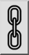

- Välj de enheter som du vill skala.
- Starta det här verktyget.
- Ange centrum för skalningen med musen eller ange en koordinat på
kommandoraden.
- Dialogrutan för skalning visas där du kan ange skalningsfaktorn.
Om du vill skala med två olika faktorer i X- och Y-riktningen
avmarkerar du knappen för proportionell skalning:

Du kan sedan ange två olika skalningsfaktorer för X och Y.
Om du vill skala urvalet med hjälp av musen markerar du knappen för
muspekaren:

- Klicka på "OK".
- Om du tidigare har valt att skala urvalet med musen måste du nu ange en
referenspunkt och en målpunkt för skalningen.